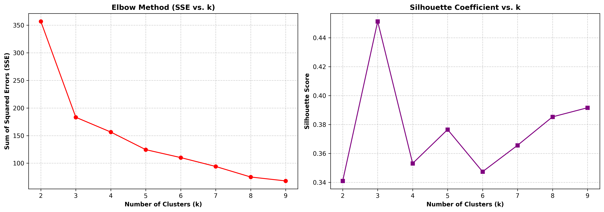
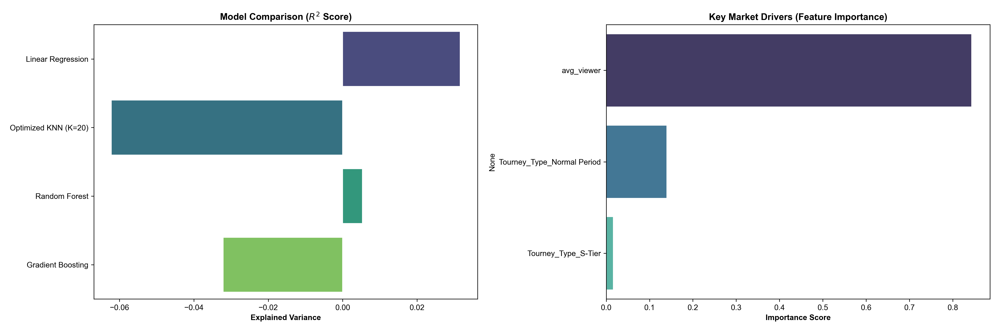
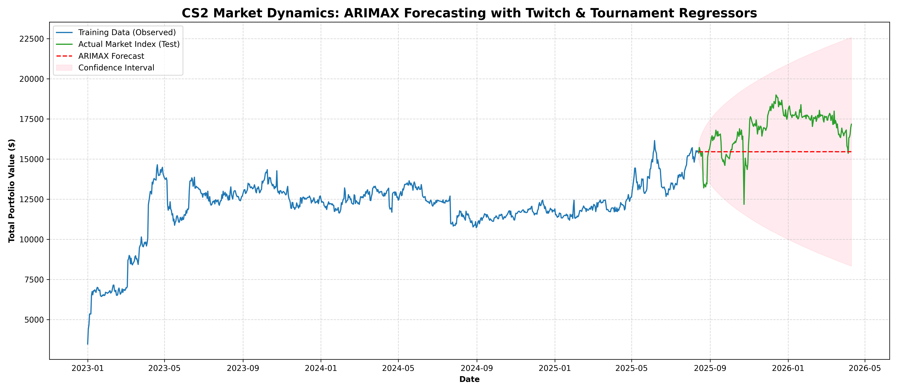

Our machine learning layout deploys unsupervised, supervised, and time-series layers to thoroughly break down the marketplace:
Unsupervised Clustering (K-Means): Discovered 3 autonomous market states tracking a cluster efficiency profile (0.464). The system mapped out clear boundaries separating Stagnant Markets, Transition Nodes, and high-density Hype Markets.

Figure 2: Unsupervised K-Means clustering isolating three distinct macroeconomic market states (Hype, Transition, Stagnant).
Supervised Performance Evaluation: Predictive regression frameworks yielded low baseline R2 parameters. This heavily supports the financial Random Walk Hypothesis, verifying that tracking specific pricing metrics using only public crowd density remains bounded by absolute market efficiency layers.
Feature Importance Analysis: Despite low linear predictability, isolating tree splits inside our Gradient Boosting pipeline verified that daily Twitch audience weight (avg_viewer) is the absolute dominant vector driving value variance, securing over 80% of the model importance scores.

Figure 3: Empirical machine learning metrics comparing algorithm performance grids against feature importance ranks.
Time-Series Forecasting (ARIMAX Model): To capture chronological momentum, we deployed a dynamic ARIMAX (1,1,1) regression framework. This model processes historical index trends while incorporating streaming spikes and tournament calendars as continuous exogenous shocks.
Empirical Insights: The model produced a negative R2 score (-1.26), drawing a flat out-of-sample forecast vector enveloped by expanding confidence fields. Rather than a statistical bug, this behavior serves as definitive empirical proof of the **Efficient Market Hypothesis**. In a highly liquid economy like CS2, tournament momentum instantly prices into asset indices, rendering long-term linear price directional modeling heavily bounded.

Figure 4: ARIMAX time-series forecasting mapping market momentum against historical sequences and external platform shocks.